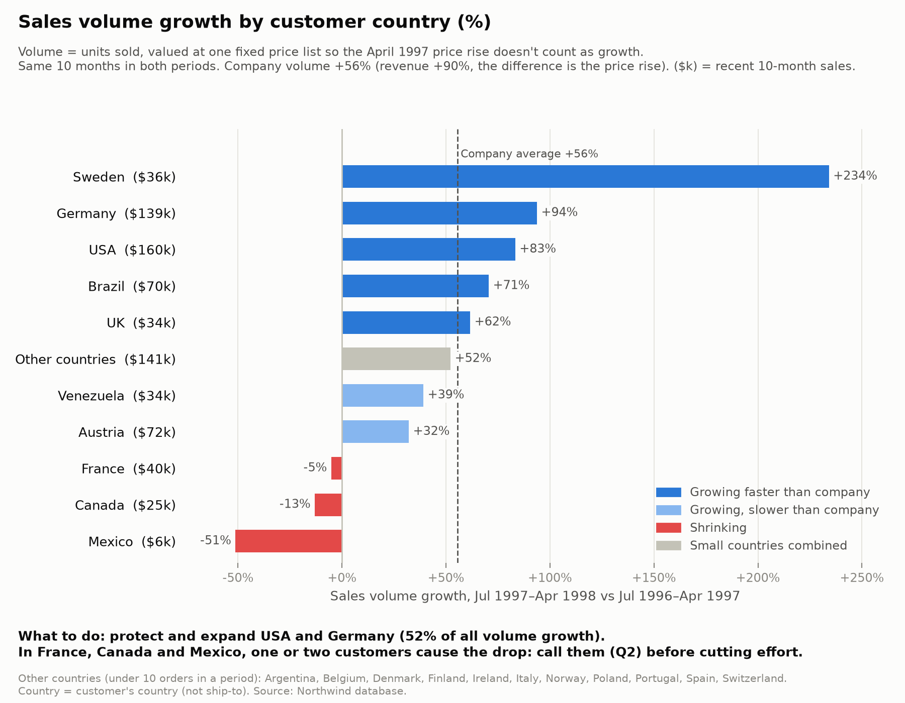
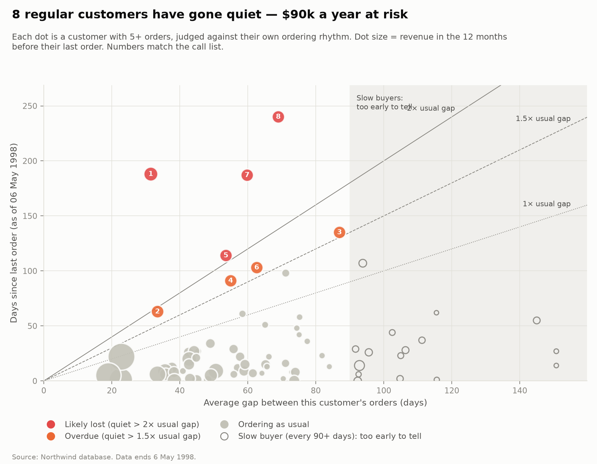
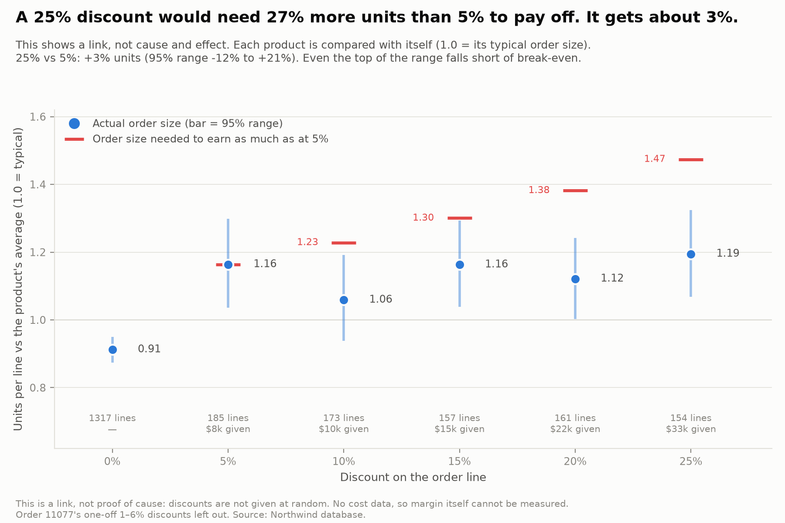

Northwind Traders · analysis for management
Growth is real, but it rests on a few markets and a few customers
Northwind is a food and drink wholesaler selling to shops and restaurants. This page answers three questions that each lead to a decision: where to focus sales effort, which customers to call first, and whether deep discounts pay off.
Data: every order from 4 Jul 1996 to 6 May 1998. 1996 and 1998 are partial years, so every comparison below uses matching months.
- Sales volume grew +56% year on year (+90% in revenue, the difference being an April 1997 price rise). USA and Germany delivered 52% of that growth.
- 8 regular customers have gone quiet, worth about $89.5k a year. Mère Paillarde alone is $23.7k.
- Deep discounts don't pay for themselves. A 25% discount would need 27% more units than a 5% discount to bring in the same revenue; it is linked to about 3% more.
1. Which customer countries are growing or shrinking?
Why it matters
Sales time is limited. Knowing which markets carry the growth, and which are slipping, tells the manager where to add effort and where to look for problems before they grow.
Approach
I compared the same 10 calendar months in both periods: July 1997 to April 1998 against July 1996 to April 1997. That keeps seasonality equal. Prices rose about 25% in April 1997, so revenue growth would partly be price. I therefore measured sales volume: every sale valued at one fixed price list. Countries with fewer than 10 orders in either period (11 of them) are grouped as "Other countries", because a single order can swing their percentage.

Main finding
Volume grew +56% overall. USA (+83%) and Germany (+94%) delivered 52% of all growth. Venezuela (+39%, $33.9k in sales) and Austria (+32%, $72.5k in sales) grew, but more slowly than the company, so they are losing share. Three markets shrank, and in each one the decline traces back to a single customer:
- France (-5%): Blondel père et fils alone lost $15.4k of volume; the whole country lost $2.2k.
- Canada (-13%): Mère Paillarde alone lost $10.1k of volume; the whole country lost $3.7k.
- Mexico (-51%): Tortuga Restaurante alone lost $6.4k of volume; the whole country lost $6.7k.
Business implication
Protect and expand USA and Germany, which are the growth engine. In France, Canada, Mexico, don't cut market effort: the problem is specific accounts, not the market. Call those customers first (see the next question). Keep an eye on the slower-growing markets.
Caveats: one or two customers drive most countries' numbers in both directions, and "volume" means less value, not necessarily fewer units (some markets switched to cheaper products).
2. Which regular customers stopped ordering, and who should sales call first?
Why it matters
Keeping an existing customer is cheaper than finding a new one, and growth here comes almost entirely from existing customers buying more. A customer who quietly stops ordering is lost revenue that nobody notices until the year-end numbers.
Approach
I judged each of the 72 regular customers (5+ orders) against their own rhythm: the average number of days between their orders. A customer quiet for more than 2× their usual gap is "likely lost"; more than 1.5× is "overdue". The average is used rather than the median because customers order in bursts, and the median would make them look more frequent than they are. Value at risk is the actual revenue in the 12 months before their last order.

Main finding: the call list
8 regular customers have gone quiet (4 likely lost, 4 overdue). Together they were worth $89.5k a year, about 10% of current annual sales.
| # | Customer | Country | Status | Revenue, last 12 mo | Usual gap (avg days) | Days quiet | Contact |
|---|---|---|---|---|---|---|---|
| 1 | Mère Paillarde | Canada | likely lost | $23,731 | 32 | 188 | Jean Fresnière (514) 555-8054 |
| 2 | Berglunds snabbköp | Sweden | overdue | $19,397 | 33 | 63 | Christina Berglund 0921-12 34 65 |
| 3 | Folies gourmandes | France | overdue | $11,667 | 87 | 135 | Martine Rancé 20.16.10.16 |
| 4 | Seven Seas Imports | UK | overdue | $10,651 | 55 | 91 | Hari Kumar (171) 555-1717 |
| 5 | Blondel père et fils | France | likely lost | $8,548 | 54 | 114 | Frédérique Citeaux 88.60.15.31 |
| 6 | Victuailles en stock | France | overdue | $8,384 | 63 | 103 | Mary Saveley 78.32.54.86 |
| 7 | Familia Arquibaldo | Brazil | likely lost | $4,108 | 60 | 187 | Aria Cruz (11) 555-9857 |
| 8 | Hungry Coyote Import Store | USA | likely lost | $3,063 | 69 | 240 | Yoshi Latimer (503) 555-6874 |
Business implication
Sales should call these customers this week, in this order, and ask why they stopped: price, service, a competitor, or a closed business. The answers tell the manager whether there is a wider problem. For the 16 slow buyers who order only every few months, it is too early to judge; they go on a follow-up calendar with a "check back by" date instead. The first is Tradição Hipermercados (Brazil): check back by 25 July 1998.
Caveats: the data ends on 6 May 1998, so some "overdue" customers may simply be about to order. A second rule (quiet for longer than their longest-ever gap) finds exactly the same four "likely lost" customers.
3. Do deeper discounts sell more, or are we giving away revenue?
Why it matters
Northwind gave away $88.7k in discounts, and $70.7k (80%) of it came from discounts above 10%. If deep discounts don't lead to bigger orders, that money is simply lost revenue, and a discount cap would recover it.
Approach
Order sizes differ a lot between products, so I compared each product with itself: units per order line divided by that product's typical order size (1.0 = typical). Then I compared what a deeper discount actually sold with what it would need to sell to bring in as much revenue as a 5% discount. Going from 5% to 25% cuts the price by 21%, so units would have to rise 27%.

Main finding
A 25% discount is linked to only about 3% more units than a 5% discount (95% range -12% to +21%), far short of the 27% needed. Even the top of the range falls short. Any discount is linked to larger orders than no discount (0.91 vs 1.16), but going deeper adds almost nothing. Two other checks agree: across the 55 products sold at both levels, 30 sold more at 25% and 21 sold less, and the same 27 customers bought only 1.08× as much at 25% as at 5%.
Business implication
Cap standard discounts at around 5–10%, and allow deeper ones only with manager approval or a minimum order size. Because this is a link and not a proven cause, run the cap as a test first: apply it to some customers or months and compare order sizes before rolling it out everywhere.
This shows a link, not cause and effect. Discounts are not handed out at random (big customers may get them because they are big), and there is no cost data, so margin itself can't be measured.
About the data and method
- Revenue = price actually charged × quantity × (1 − discount), from the order lines. Total $1,265,793; data checks found no duplicate keys and no broken links between tables.
- Country is the customer's country, not the ship-to address (4 orders have mixed-up ship-to addresses).
- Leftover exercise columns in the Product sheet were ignored. One order with unusual 1–6% discounts was left out of question 3.
- All numbers, charts and this page are produced by Python code. A test suite checks every headline number, and a fresh copy reproduces every output byte for byte.
Code and step-by-step reproduction: github.com/lcsansano/luciocar-15561-hw3